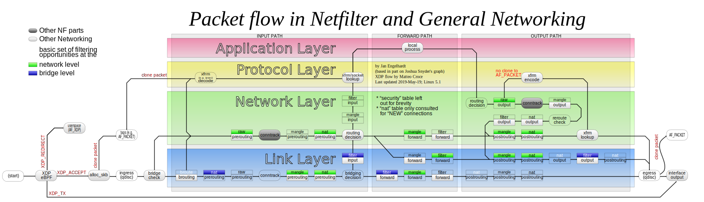
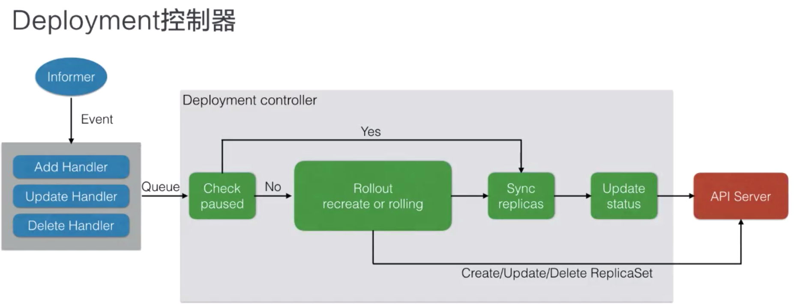
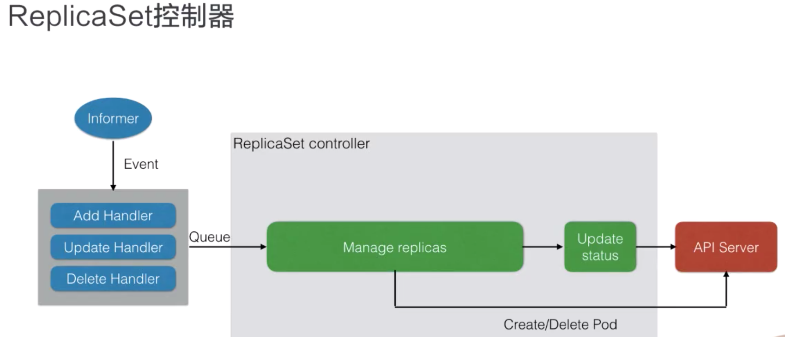
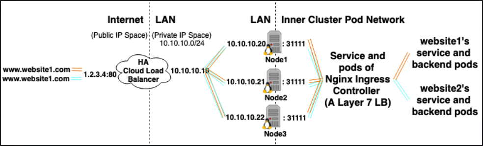
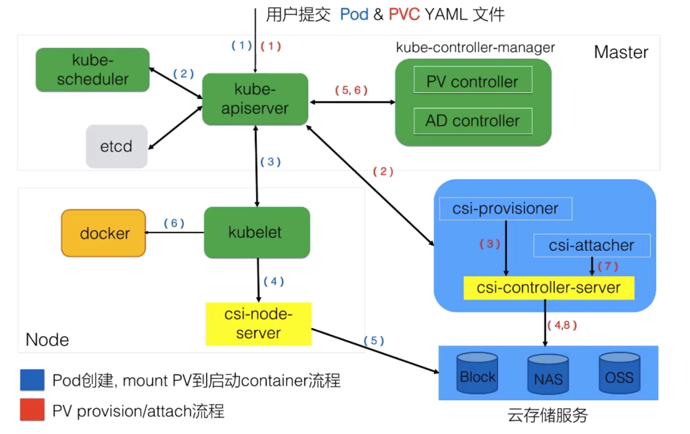
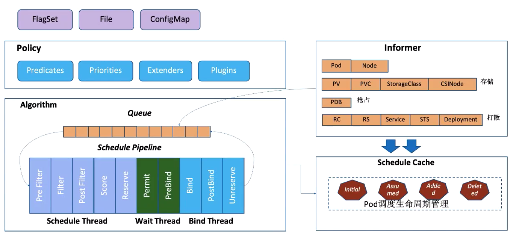

Kubernetes学习笔记
记录k8s学习过程中遇到的一些知识杂记，以及阿里云云原生公开课学习
组件 (Components)
Master 组件
Master 组件提供集群控制。 包括对集群作出全局性的决策(例如：调度)， 以及检查和响应集群事件(例如：当deployment的replicas字段不满足时，创建新的的Pod).
kube-apiserver: Master 上的组件暴露Kubernetes的API。Kubernetes控制面板的front-end，被设计成可以水平扩展
etcd：一致性的，高可用的k-v存储。用来存储所有集群相关的数据。
kube-scheduler: Master 上的组件，简单新创建的Pod，并根据具体的一些因素，选择合适的Node去运行该Pod。因素包括：
individual and collective resource requirements,hardware/software/policy constraints,affinity and anti-affinity specifications,data locality,inter-workload interference and deadlines.kube-controller-manager: Master 上的组件运行controller
- Node Controller: 负责通知和管理Node的状态，当Node挂掉之后，作出响应和通知。
- Replication Controller: 负责保证Pod具有正确的replica数量
- Endpoints Controller: (Populates the Endpoints object)设置Pod或者Services的Endpoint
- Service Account & Token Controllers: 对新的namespaces创建默认的账户和API access token
cloud-controller-manager： 用于与云基础服务提供商（云厂商）交互，即将Kubernetes的代码与云厂商的代码分割开。与云厂商相关的代码由云厂商自己来维护。在未来的release版本中，当运行Kubernetes时，其云厂商代码则会被连接到cloud-controller-manager中。
Node 组件
Node 组件在每一个节点上运行，维护运行的Pod并提供Kubernetes运行环境 (runtime environment).
- kubelet：在集群中每个Node上面运行的agent，保证容器（container）运行在Pod中。主要管理在Pod上面运行的容器，与Master中的kuber-apiserver进行交互得到调度命令，调用Container Runtime来配置运行环境。
- kube-proxy：在每个Node上面运行网络代理（network proxy）。实现了Kubernetes Service concept的一部分。负责Node上的网络规则，和与集群的网络通信，主要利用iptable能力实现。
- Container Runtime： 容器运行环境对容器的运行负责。Kubernetes支持多种容器的运行环境，例如：Docker，containerd，cri-o等等，实现了Kubernetes CRI（Container Runtime Interface）的接口的运行环境均可。
Addons 插件
相关术语
- Node: kubernetes中的worker machine, 之前称之为
minion. Node可以是物理机或者VM。Node具有运行容器（containers）时一些必要服务。Node通过master system来管理。 - Kubernetes资源对象，Spec期望对象，Status：观察到的状态，Metadata：Labels，Annotations，OwnerReference
- Pod: kubernetes中运行容器的基本单元，每个pod中会维护至少一个docker容器Container，并且控制着容器的执行，当容器退出，则Pod也会结束。Pod提供了为容器设置环境变量，挂载存储(mount storage)，传递其他信息给容器的功能。
- Namespaces：一个集群内部的逻辑隔离机制（鉴权，资源额度），每个资源属于一个Namespace
- ReplicaSets: 可以认为在kubernetes中
low-level的类型。通过Kubernetes用户会选择更高级别的抽象例如Deployments和DaemonSets.ReplicaSet保证了独立配置的pod可以以一定数量的replica运行，当一个pod宕掉,下线之后，ReplicaSet将会生成一个新的Pod进行替换。 - Service: Kubernetes中云原生的服务发现机制，在Helm中可以通过定义
service.yaml来定义service。且创建的service通过selector绑定到具体的容器上，Kubernetes会给这个service分配一个IP，称之为cluster IP. 每一个在Kubernetes中的node，运行着kube-proxy来维护虚拟IP，以及Service - Secrets：存储密码，tokne等敏感信息，base64编码。当这些数据连接到Pod中时，则会自动被解码。Secrets可以被以环境变量或者文件的形式传递给Pod。使用插件的加密方法对数据进行加密。Secrets通常会被使用用来存储
non-public information. 类型于： token，certificates，password. Secrets可以被Pod在运行期间加载进来，因此敏感的配置信息可以被安全的存储在集群中。 - Deployments: Deployments支持更新和回滚。甚至可以暂停一次发布（Rollouts can even be paused）。
Deployments是一个高级别(high-order)的对于部署(deploying)和维护(maintaining)Pods的抽象。在背后，使用ReplicaSet保持Pods的运行，并且提供复杂的逻辑(sophisticated logic)去支持部署，更新，以及扩展(scaling) - DaemonSet: DaemonSet有很多种用法，最常见的一种用法是使用DaemonSet在每个node上安装配置软件 。DaemonSet提供了一种在集群中保证Pod的复制在每个node上面的运行的方法。 当集群增长或缩减时，DaemonSet在所有node上传播这些有特殊标记的Pods。DaemonSet通常是在每个node上面运行一些agent，适用于如下场景：1. 集群存储进程: glusterd, ceph. 2. 日志收集进程：fluentd，logstash 3. 需要在每个节点运行的监控收集器
- Ingresses: 集群的路由功能。 对多个应用提供了单一的SSL endpoint。 许多不同的Ingress的实现允许自定义平台。Ingresses提供了集群的路由功能，一个单一的外部Ingress endpoint可以接受并将请求路由到内部不同的服务上去。
CronJobs：使用通用的Cron语法去调度任务，CronJobs是Batch API的一部分，用来创建短期任务。CrobJobs提供了Pod定期执行任务的方法。对于执行定期任务非常有用。例如： backups， reports， automated tests等等。- Job: 即一次任务，可以设置job的并行度，与Job之间的执行顺序。注意：Job中 spec不可以指定replicas参数
CRDs.CustomResourceDefintions提供了一种开发者用来创建自定义资源类型的扩展机制。在Kubernetes API中创建一个自定义的资源- Volumes: Container中的磁盘文件是短暂的（ephemeral），当容器重启时候，文件可能会丢失，即容器上的文件生命周期同容器的生命周期一致。Pod的volume的生命周期同Pod的生命周期一致，当Pod被删除时，对应的volume才会被删除，即当容器（container）重启时，之前的文件可以被报错。常用的有
emptyDir - local ephemeral storage: 管理和调度kubernetes中运行的应用和短暂存储，即在每个kubernetes的node上面，kubelet的根目录(默认是/var/lib/kubelet)日志目录(/var/log)存储在node的主分区上 (on the root partition of node). 这个分区（partition）同样被Pod通过
emptyDir volumes以及container logs,image layers,container writable layers共享。 因此ephemeral storage主要管理这个分区。可以通过配置该资源的request和limit进行设置 - MaxUnavailable: Deployment滚动过程中最多有多少个Pod不可用
- MaxSurge：Deployment滚动过程中最多存在多少个Pod超过期望的replicas
- revisionHistoryLimit: 保留历史revision(ReplicaSet), 可以用于回滚
- RollingUpdate: 更新策略，即老的Pod先会被删除，然后再去创建新的Pod。可以配合健康检查做滚动更新
- ConfigMap: 主要管理容器运行所需的配置文件，环境变量，命令行参数等可变配置。用于解耦容器镜像和可变配置，从而保证工作负载(workload Pod)的可移植性。 ConfigMap主要被Pod使用，可以通过如下三种方式来使用：1.通过
configMapKeyRef配置环境变量 2. 通过ConfigMap配置命令行参数 3. 通过volumeMounts方式挂载配置文件 - ServiceAccount: 主要用于解决Pod在集群中的身份认证问题，其中认证使用的授权信息。
- Sercurity Context: 主要用于限制容器行为，从而保证系统和其他容器的安全。即可以设置privileged: 容器是否为特权模式，AppArmor：控制可执行文件的访问控制权限，Seccomp：控制进程可以操作的系统调用等
- InitContainer：先于普通的Container启动，直到所有InitContainer执行成功之后，才会启动普通Container。Pod中多个InitContainer之间按次序依次执行，而pod中多个普通Container是并行启动。InitContainer执行成功之后就结束退出。通常InitContainer服务于普通Container，例如：准备一些配置文件等
问题与解答
1. 什么是容器，镜像？
容器(Container)，是一个视图隔离，资源可限制，独立文件系统的进程集合，容器里PID的进程就是应用本身。镜像(Image), 运行容器所有文件集合，镜像一层一层的结构，且镜像层级是共享的，会节省空间。镜像构建步骤产生系统文件的变化称之为: ChangeSet
传统架构：进程之间可见，可相互通信，共享一份文件系统
容器架构:（Docker）
- 资源视图隔离 - namespace 例如：能看见部分进程，独立主机名（默认情况下进程namespace隔离，使得容器内进程不可见宿主机进程，要做的容器内进行与宿主进程的共享可以使用
--pid参数） - 控制资源使用率 - cgroup 例如：使用2G内存大学，CPU使用个数等等
- 独立的文件系统 - chroot
- 资源视图隔离 - namespace 例如：能看见部分进程，独立主机名（默认情况下进程namespace隔离，使得容器内进程不可见宿主机进程，要做的容器内进行与宿主进程的共享可以使用
容器运行时的生命周期分为两块：
单进程模型：
- Init进程生命周期 = 容器生命周期
- 运行期间可以运行exec执行一些运维操作
数据持久化
- 独立于容器的生命周期
- 数据卷 - docker volume vs bind
moby 容器引擎架构，containerd是容器运行时管理引擎，独立于moby daemon，containerd-shim管理容器生命周期，可以被containerd动态接管。涉及到的容器虚拟化解决方案：runC,kata,gVisor
2. 容器和VM之间的差异？
VM：使用Hypervisor之类的技术来模拟硬件资源
- 模拟硬件资源，需要Guest OS即虚拟机。
- 应用拥有Guest OS所有的资源
- 更好地隔离效果 - Hypervisor需要消耗更多的资源
容器：使用容器引擎(Container Engine)
- 无Guest OS，进程级别隔离
- 启动时间更快
- 隔离消耗资源少- 隔离效果弱于VM
2. iptables基础简述
Linux上常用的的防火墙软件。在Kubernetes中kube-proxy使用iptables完成路由转发代理的功能。iptables通常我们所说的“四表五链”。iptables主要工作在三层和四层，即传输层（TCP/UDP）和网络层(IP, ICMP)。NAT：Network Address Translate
table表：
- raw：高级功能，如：网址过滤
- mangle：数据包修改（QOS），用于实现服务质量
- nat: 地址转换，用于网关路由
- filter: 包过滤，用于防火墙规则
chain链（也被称之为五个钩子函数hook function）：
- INPUT: 处理输入的数据包.
- OUTPUT: 处理输出的数据包
- FORWARD链: 处理转发的数据包
- PREROUTING链：用于目标地址转换 (DNAT)， 在路由决定（routing decision）之间，进入
PREROUTING。 - POSTROUTING链：用于源地址转换 (SNAT)， 路由决定（routing decision）已经完成，在包进入硬件之前，进入
POSTROUTINT
流程图如下：

xxxxxxxxxx┏╍╍╍╍╍╍╍╍╍╍╍╍╍╍╍┓┌───────────────┐ ┃ Network ┃│ table: filter │ ┗━━━━━━━┳━━━━━━━┛│ chain: INPUT │◀────┐ │└───────┬───────┘ │ ▼│ │ ┌───────────────────┐┌ ▼ ┐ │ │ table: nat ││local process│ │ │ chain: PREROUTING │└ ┘ │ └─────────┬─────────┘│ │ │▼ │ ▼ ┌─────────────────┐┅┅┅┅┅┅┅┅┅┅┅┅┅┅┅┅┅┅┅ │ ┅┅┅┅┅┅┅┅┅┅┅┅┅┅┅┅┅ │table: nat │Routing decision └───── outing decision ─────▶│chain: PREROUTING│┅┅┅┅┅┅┅┅┅┳┅┅┅┅┅┅┅┅┅ ┅┅┅┅┅┅┅┅┅┅┅┅┅┅┅┅┅ └────────┬────────┘│ │▼ │┌───────────────┐ ││ table: nat │ ┅┅┅┅┅┅┅┅┅┅┅┅┅┅┅┅┅ ││ chain: OUTPUT │ ┌─────▶ outing decision ◀──────────────┘└───────┬───────┘ │ ┅┅┅┅┅┅┅┅┳┅┅┅┅┅┅┅┅│ │ │▼ │ ▼┌───────────────┐ │ ┌────────────────────┐│ table: filter │ │ │ chain: POSTROUTING ││ chain: OUTPUT ├────┘ └──────────┬─────────┘└───────────────┘ │▼┏╍╍╍╍╍╍╍╍╍╍╍╍╍╍╍┓┃ Network ┃┗━━━━━━━━━━━━━━━┛
iptables -t nat -L: 查看nat上面所有的规则。
3. Service相关
Service： Kubernetes会创建一个虚拟服务，用来整合集群内的Pod。Service会生成一个虚拟IP（VIP），并在Service销毁之前保持该VIP地址不变。通过对它的访问，以代理的方式负载到对应的Pod上，同时Pod生命周期的变换，也会及时反应在代理上。
Service与Pod的地址映射关系由Endpoint管理。 Endpoint与Service的绑定关系通过名称关联, 即以<service>: [<pod ip>]形式,因此而者名字（name）一定要一致。也可以手动创建或者删除Endpoint与Service绑定。
Service的代理由kube-proxy实现。而代理模式有如下几种：userspace, iptables, IPVS . userspcase运行在用户空间，而iptable和ipvs运行在内核空间能够为kubernetes提供更强大的性能支持
- userspace: 每个Service都会在当前节点上开启一个端口所有连接到当前代理端口的请求都会被转发到Service背后的一组Pod上面, 实际上也会写node上的iptable进行转发，与iptables模式不同的是，需要先进入userspace再写iptables。默认userspace模式会通过
round-robin algorithm来选择后端服务 - iptables: 直接使用iptables转发当前节点上面的全部流量。使用iptables的方式，启动节点上的代理时，所有的流量都会先经过
PREROUTING或者OUTPUT链，随后进入Kubernetes自定义的链的入口KUBE-SERVICES，单个Service对应的链KUBE-SVC-XXXX以及每个Pod对应的链KUBE-SEP-XXXX, 经过这些链的处理才最终访问到一个真实IP地址。 当集群中的Service到达一定数量时（5000个）以上时，则每增加一条规则就会需要很多的耗时，因此在大规模集群中使用iptables作为代理模式是完全不可用的 - IPVS:
IP Virtual Server就是用于解决在大量Service时，iptables规则同步变得不可用的性能问题。ipvs在内核空间使用哈希表。这意味着kube-proxy在ipvs mode下重定向有更低的延迟和同步proxy规则有更高的性能。
Service服务发现机制，对于服务之间的调用，实际上是Pod对Service的调用。而Pod是如何发现Service的呢。可以选择两种机制：
- 环境变量：在Pod中，集群的Service会以环境变量的方式赋值在容器中，可以通过
{SERVICE_NAME}_SERVICE_HOST和{SERVICE_NAME}_SERVICE_PORT获取。 - dns解析：通过kube-dns对Service进行域名解析，同样也能达到服务发现的目的
Service对外暴露服务，在Service的配置文件中，通过设置spec.type来设置服务的暴露方式，它提供三种方式：
- ClusterIP：提供一个集群内部的IP以供Pod访问（默认类型）
- NodePod：在每个Node上打开一个端口以供外部访问
- LoadBalancer：通过外部的负载均衡器来访问（一般需要云提供商提供LB支持）。注意：在AKS（Azure Kubernetes Service）上load balancer类型的Service被创建时，AKS集群会分配一个公共IP，同样的这个IP的生命周期和load balancer资源生命周期一致。在一些情况下，推荐使用静态IP作为load balancer。具体参考：doc: aks static-ip
- ExternalName: 通过返回CNAME和它的值，可以将服务映射到externalName字段的内容。需要有CoreDNS 1.7的支持
4. 为什么需要Pod？
将Kubernetes生态类比于操作系统，则有类似如下映射
- kubernetes: 操作系统
- Container：进程（线程）。容器是“单进程”模型，且PID=1的为应用进程，不为systemd，一般情况下不具备像systemd这样完善的进程管理能力，因此无法管理多进程，对于复杂多进程的应用不便于管理（需要设置systemd）。
- Pod: 进程组，即一个Pod里面可以运行多个container。在同一个Pod里面的容器要求具有 超亲密关系(affinity)，即：容器之间会发生直接的文件交换，或者使用本地socket进行通信，会发生频繁的RPC调用，会共享某些Linux Namespace (比如, 一个容器要加入另一个容器的Network Namespace). 对于亲密关系的容器，可以由调度器运行在同一个宿主机上。
因此Pod存在的意义在于进程与进程组的关系，核心在于多个进程之间共享信息，Pod在Kubernetes中是原子调度单位。
Pod之所以是Kubernetes中原子调度单位，是因为多个紧密协作的容器，资源统一分配在一个Pod中，例如：App：1G， LogCollector: 0.5G. Node_A: 1.25G Node_B: 2G. 如果使用分开调度的方式分配资源，很有可能导致App，LogCollector分配到Node_A上导致资源不足。
Pod中关键的一个设计模式是保证Pod里的container数据能够高效的共享。
- 共享网络: 通过Infra Container的方式共享同一个
Network Namespace. 即所有在Pod中的Container所看到网络视图view（网络设备，网卡之类的）是一致的，因此Pod的生命周期跟Infra Container一致。 - 共享存储: 即创建Pod级别的volumes, 并通过
volumeMounts进行挂载，因此两个Container将会看到同一份文件。
Pod由ReplicaSet创建，其OwnerReference为RelicaSet. Deployment只负责管理不同版本的ReplicaSet，由ReplicaSet管理Pod副本数。每个ReplicaSet对应了Deployment template的一个版本，一个ReplicaSet下的Pod都是相同的版本
5. 容器设计模式 Sidecar
所有“设计模式”的本质都是：解耦和重用
通过在Pod里定义专门容器，来执行主业务容器需要的辅助工作。优势在于将辅助功能同主业务容器解耦，实现独立发布和能力重用。例如：
- 原本需要SSH进去执行的脚步
- 日志收集
- Debug应用，定义Debug Container，去监控主应用，具有主应用的Namespace
- 应用监控
通常可以使用InitContainer之类的技术实现. 且主应用Container与Sidecar Container之间的通信是通过localhost实现（同一个Pod内），实际应用如下:
- Sidecar应用日志收集，业务日志将日志写在Volume里，日志容器共享该Volume从而将日志转发到远程存储中。例如：Fluentd等
- Sidecar代理容器，代理容器对业务容器屏蔽被代理的服务集群，简化业务代码实现的逻辑。同一个Pod之间容器之间通过localhost直接通信，代理容器的代码可以被全公司重用（复用）。
- Sidecar适配器容器（adapter），适配器容器将业务容器暴露出来的接口转化成另一种格式。代理容器的代码可以被全公司重用。
6. 控制器设计模式
在机器人设计和自动化的应用中，控制循环是一个用来调节系统状态的非终止循环。而在 Kubernetes 中，控制器就是前面提到的控制循环，它通过 API Server 监控整个集群的状态，并确保集群处于预期的工作状态。Kubernetes 自带的控制器有 ReplicaSet 控制器，Endpoint 控制器，Namespace 控制器和 Service Account 控制器等。

Check paused： 检查是否是一次新的发布，反之，仅为一个replica的sync。

Deployment管理ReplicaSet，Deployment回负责相应的版本管理，而ReplicaSet只负责维护Replicas的数量。例如：发布一个新版本，则Deployment创建新的版本ReplicaSet，并由ReplicaSet维护同步Replicas的数量。
Kubernetes采用控制器模型，声明API。由声明式的API驱动-K8S资源对象，由控制器异步地控制系统向终态驱近。使系统的自动化和无人值守化成为可能。便于扩展-自定义资源和控制器 （特别的，operator）。Kubernetes中运行着一系列的控制器确保集群状态与期望状态一致。
命令式API (Imperative)：
- 反复重试，记录当前操作
- 巡检修正
- 并发加锁
声明式API (Declarative)：
- 天然的记录了状态
- 幂等操作，可以在任何时刻反复操作
- 正常操作即巡检
- 可以合并多个变更
7. Pod如何进行配置管理？
为了服务的可扩展性，通常服务的配置是不会打包到image镜像里的。对于不同的类型的配置，kubernetes有如下几种管理方式。
- ConfigMap: 可变配置
- Secret：敏感信息
- ServiceAccount：身份认证
- Spec.Containers[].Resources.limits/requests: 资源配置
- Spec.Containers[].SecurityContext： 安全管控
- Spec.InitContainers: 前置校验
使用ConfigMap时进行配置管理时，有如下几个注意点：
- ConfigMap文件大小限制： 1MD (*ETCD的要求)
- Pod只能引用相同Namespace下的ConfigMap
- Pod引用的ConfigMap不存在时，Pod无法创建成功。即Pod创建前需要先创建ConfigMap
- 使用envFrom从ConfigMap配置环境变量时，如果某些key被认为无效（例如：key名称带有数字），则该环境变量不会被导入容器，但是Pod可以正常创建
- 只有通过k8s api创建的pod才能使用ConfigMap。
8. Service在Kubernetes中运行在哪里？
Where do service live in Kubernetes stackoverflow?
Service是k8s集群中的REST资源对象。有如下基本功能（fundamental Purpose of Services）
- 为Pods提供单一的gateway入口
- Load balancing Pods (Pods 的负载均衡)
- 内部Pods通信（Inter Pods communication）
- 提供稳定性（Stability）例如，当Pod挂掉之后，可以重启并使用不同的ip。
Service对象的信息存储在etcd中,是由于Service的信息是k8s集群中单一的事实来源。而真正负责实现Service功能是Kube-proxy. Kube-Proxy根据Sevice定义的selector和label对具有相同的label的Pod进行匹配. 更具体一点的是，每个Pod有其自身的ip，并且Service到Pod的映射由EndPoint来管理，最终由Kube-proxy以proxy-mode的形式（userspace， iptables，ipvs）负责代理实现。
kube-proxy作为DaemonSet被部署到集群中每个node中，因此集群中每个node的kube-proxy数据通过etcd来达成共识。同时，kube-proxy也会与Kube-api server进行交互，去检查Pods对应的状态改变，并作出响应，例如：更新Service，iptable，eted等。
总结：Service是k8s集群中REST的资源对象，而实际由kube-proxy进行实现，管理，因此可以理解为Service运行在k8s集群中的每个node上面。
9. Ingreess Vs Load Balancer?
ingress vs load balancer stackoverflow
- Load Balancer: Kubernetes中LoadBalancer Service通常为外部云服务提供商的LB。对于LoadBalancer Service的depolyment，云服务提供商都会创建一个LB与之映射.
- Ingress: Ingress实际上是一些传递给控制器（controller）的规则（rules），并由控制器会监听并执行规则。如果仅仅是deploy一些ingress rule规则，并没有实际的controller执行这些规则的话，就不会产生实际的影响。当然，Loadbalaner，NodePort，Pod都可以作为ingress controller配置并执行ingress的rules。Ingress作为Kubernetes的入口存在，可以实现（SSL，Auth，Routing）等功能.
Ingress：Ingress Object + Ingress Controller （Build on LoadBalancer Service）
- Ingress Object: 负责7层的负载均衡，以及定义请求如果路由到k8s集群的规则
- Ingress Controller：负载监听请求的入口端口（80 or 443）, 监听Ingress Object的创建和修改，并根据Ingress Object动态的创建7层路由的规则。常见的Ingress controller例如：Nginx Ingress Controller
LoadBalancer: External Load Balancer Provider + Service Type
- External Load Balancer Provider: 由云服务提供商提供的IP，以及Load Balancer的服务
- Service Type: 当Service type被设置成LoadBalancer，将会给Service设置由云服务提供商提供的外部IP。（external IP）
下图即为Ingress的网络：

关系: Ingress Controller Service通常由LoadBalancer来提供服务，并由k8s集群中运行的Pod提供复杂的网关路由的能力。
10. 什么是Pod的服务质量（QoS)?
容器支持资源（Resource）配置的类型有如下几个：
- CPU: 单位：millcore（1Core=1000millicore）
- Memory: 单位：Byte
- Ephemeral storage(临时存储)：单位Byte
- 自定义资源必须是整数
依据容器对CPU，Memory资源的request/limit需求，Pod服务质量分类：
- Guaranteed: Pod里每个容器都必须有CPU，内存限制和请求，而且request/limit必须是一样的。 高保证
- Burstable：非Guaranteed，Pod里至少有一个容器有内存或者CPU请求。中，弹性
- BestEffort定义：非Guaranteed，非Burstable。低，尽力而为
当节点上Memory资源不足时，依据BestEffort,Burstable,Guaranteed的优先级顺序驱逐Pod
不同的QoS在底层有不同的表现，调度器会使用request的值来进行调度。
- CPU会安装request划分权重。--cpu-manager-policy=static，即当guaranteed的整数时，会绑核
- Memory安装Qos划分不同的OOMScore，Guaranteed -998，Bustable 2-999 bestEffort 1000 即，当OOMScore得分越高，当发送OOM时，程序会更容易被kill。
11. Volumes基础知识
Kubernetes Volume的类型：
本地存储：emptydir/hostpath
网络存储：
- in-tree: awsElasticBlockStore/nfs
- out-of-tree: flexvolume/csi等网络存储volume plugins
Projected Volume: scret/configmap/dowanwardAPI/serviceAccountToken
PVC与PV体系
PV即Persistent Volumes常用于
- Pod销毁重建（例如：Deployment管理的Pod镜像升级）
- 宿主机故障迁移(如：StatefulSet管理的Pod带远程volume迁移)
- 多Pod共享同一个数据volume
- 数据volume snapshot，resize等功能的扩展实现
PVC即PersistentVolumeClaim, 有了PV，为什么又设计了PVC？
- 职责分离，PVC中只用声明自己需要存储的size，access mode(单node独占还是多node共享，只读还是读写访问)等，业务的存储需求，PV和其对应的后端存储信息则交由cluster admin统一运维管理，安全访问策略更容易控制
- PVC简化了User对存储的需求，PV才是存储的实际信息承载体，通过
kube-controller-manager中的PersisentVolumeController将PVC与合适的PV 绑定bound到一起，从而满足User对存储的实际需求 - PVC像是面向对象过程编程中抽象出来的接口，PV是接口对应的实现
Static volume Provisioning, Dynamic Volume Provisioning为两种创建PV的方式，静态方式则是提前规划或者预测存储需求，但是这样会导致User提交的PVC找不到合适的PV。动态方式则是提交创建PV的模板（包含了创建某种具体类型PV所需的参数），User不关心PV细节，K8s会结合PVC与Storage Class的信息动态创建对象。
使用PV和PVC时，需要先在云服务提供商上定义相应的存储，例如文件存储，网络存储，然后定义k8s模板PV以及PVC对象。静态PV则预创建分配存储，动态PV则创建StorageClass模板，动态创建, 具体参考k8s persistent-volumes。
PVC整体流程如下：

PVC&PV创建到使用的有三个阶段：1. create 即创建相应的PV，PVC 2. attach 将PV attach到node上面 3. mount 将存储mount到pod可以访问的路径上面
12. Liveness probe vs Readiness probe
Liveness probe和Readiness probe为kubernetes中应用健康监控的两种方式，有Probe Manager管理
- Readiness Probe(就绪指针)：即用于探测容器的依赖有没有成功加载，例如：Database的connection，以及其他依赖的加载。检测失败则切断上层流量
- Liveness Probe(存活指针)：即用于检测容器是否是启动，且存活状态，如果不是，则会根据重启策略，对容器执行相应的操作。检测失败则杀掉Pod，并支持重新拉起的应用
探测方式支持：httpGet（发送http Get），Exec（通过执行命令来检测），tcpScoket（通过容器的IP和Port执行TCP检测，即是否建立TCP连接来表明容器健康状态）。
13. Prometheus & Fluentd监控架构
下图是prometheus的整体架构，prometheus的采集通常采用定期pull的模式。对于短任务采集来说由于任务周期有可能会少于采集周期，因此使用Pushgateway作为中间层。其他通常模式直接pull metrics。还可以采用Prometheus-On-Prometheus的模式。在kubernetes中部署时通常采用Prometheus Operator的形式。

对于日志监控，主机内核的日志，Docker runtime的日志，核心组件的日志（ingress的日志），以及应用的日志，kubernetes社区中一种主流的做法是使用fluentd进行日志的收集。
14. 容器原理：Cgroup vs Namespace
Cgroup和Namespace为docker提供了隔离的基础, stackover flow cgroup vs namespace
Namespace主要作视图控制，即视图上的隔离，由如下几部分：mount（控制文件），uts（hostname），pid（进程），network，user，ipc（控制进程间通信），cgroup（容器内部cgroup). 容器创建使用namespace通过unshare系统调用来实现。
Cgroup主要作资源控制，有两种驱动：systemd cgroup driver，cgroupfs cgroup driver。容器中常用的cgroup为：1. cpu cpuset cpuacct， 2. memory 3. device (安全性设备) 4. freezer（停止容器时，并将进程写入相应文件，主要防止容器停止时，进程逃逸到宿主机）5. blkio（限制对文件，磁盘的iops）6.（pid 限制容器里最大进程数量）
15. Etcd 基本架构和原理
Etcd是一个高可用，强一致的KeyValue数据存储，以分布式分布式共识协议算法Raft来保证数据的一致性。Quorum=(n+1)/2, 即3个节点容忍一个故障，5个节点容忍2个故障。更多关于Raft内容可以参考Raft算法。Etcd支持Watch机制以增量更新。Etcd支持两种查询机制，单个key Get(key), 以及Get(keyFrom, keyEnd)范围获取，Etcd支持分布式事务Transaction机制 (if/then/else ops).Commit()，以及Lease租约机制(Grant, Revoke, KeepAlive)。
Etcd主要提供了如下一组APIs：
- Put(key, value)/Delete(key)
- Get(key, rev=reversion) / Get(keyFrom, keyEnd)
- Watch(key/ keyPrefix)
- Transactions (if/then/else ops).Commit()
- Leases: Grant/Revoke/KeepAlive
Etcd提供如下几个关键数据信息：
term：Raft的leader任期号，全局单调递增，64bits
revision: 全局单调递增，64bits. revision的存在，因此etcd支持，mvcc，以及watch机制
KeyValue: （类似于MySQL MVCC)
- create_revision：创建时的revision
- mod_revision：修改是的revision
- version：version计数器代表该数据被修改了多少次
Etch watch机制, 监听key的某个revsion，获取所有etcd关于这个key的更新，以支持增量更新：
xxxxxxxxxxwatcher = Watch(key, rev)for{ event=watcher.Recv() handle(event)}Etcd data model data-model. Etcd通过B+tree将数据持久化保存到磁盘中，并维护两个B+tree index，这里类似于MySQL的二级索引，第一个index为revision->value（存储了所有数据，并通过mmap的方式加速查询）, 第二个index为key->revisions (watch机制). Etcd中的一个key对应多个版本的数据，通过定期的Compaction来清理历史数据。
Etcd支持mini-transaction的机制，且Etcd内部会保证if条件，以及then执行过程的原子性。 通过Etcd提供的事务机制，Kubernetes多个APIserver对etcd修改的一致性。
Etcd支持Lease租约机制, etcd支持多个key关联到同一个lease对象上。
xxxxxxxxxxlease=CreateLease(10s)Put(key1, value1, lease) //10秒租约结束后，etcd自动清除key1Put(key2, value2, lease)...lease.KeepAlive() //保证租约不过期，自动续约lease.revokeAll() //全部过期Etcd用来在kubernetes系统中存储元数据。Etcd还可以作为Service Discovery服务发现（Nameing Service), 即后端进程将自己的进程注册到Etcd中进行资源注册，并进行存活性检查，API gateway网关根据etcd中的存储信息，进行请求的转发。 Etcd可以用于分布式选主，以及分布式系统的并发控制（分布式信号量，自动踢出故障节点，存储进程的执行状态）。
16. 为什么要有request和limit？
request提供了对资源的一种保底能力，limit提供了对资源的限制能力。request和limit的组合来实现不同的QoS级别，以及资源的弹性的能力。limit即是上限 limit>request。当实际资源使用，超过了requests,接近limit，则kubernetes则会选择一个pod并将其evit
17. Kubernetes 的调度过程
kubernetes的调度为kube-apiServer，kube-scheduler，controller共同协同完成，调度过程即将Pod放到“合适的”Node上， 什么是合适：
- 满足Pod的资源要求
- 满足Pod的特殊关系要求
- 满足Node的限制条件要求
- 做到集群资源合理利用
 Kubernetes的基础调度能力有，资源调度和关系调度
Kubernetes的基础调度能力有，资源调度和关系调度
资源调度 - 满足Pod的资源要求
- Resource: CPU/Memory/Storage/GPU/FGPA
- QoS: Guaranteed/Burstable/BestEffort
- Resource Quota
关系调度 - 满足Pod/Node的特殊关系/条件要求
PodAffinity/PodAntiAffinity: Pod和Pod之间的关系 （Pod和Pod的亲和关系）
- requiredDuringSchedulingIgnoredDuringExecution: 必须和某些Pod调度在一起
- preferredDuringSchedulingIgnoredDuringExecution: 优先和某些Pod调度在一起
NodeSelector/NodeAffinity: 由Pod决定合适自己的Node （Pod和Node的亲和关系）
- NodeSelector: 必须调度到带了某些标签的Node
- NodeAffinity: 与PodAffinity类似，增加了Gt/Lt的功能。
Taint/Tolerations: 限制调度到某些Node，即Node只会容忍某些满足条件的Pod (Node的限制条件标记)
- Taint: 一个node有多个Taints，Taints包含key，value，effect. effect定义了Node taint的行为。包括NoScheduler(禁止新的Pod调度)，PreferNoSchedule(尽量不要调度到这台)，NoExecute(会evict没有对于toleration的Pods)
- Tolerations: 一个pod可以有多个Tolerations。包含key，value，effect，operator（exists，equal）.
使用ResourceQuota来限制每个NameSpace的资源使用总量。关于ResourceQuota的使用可以具体看官网文档。
Kubernetes的高级调度能力，优先级抢占调度。（Priority，Preemption）. 优先级调度的配置可以通过创建PriorityClass来实现。pod-priority-preemption。 Pod可以具有优先级，优先级标志着Pod的重要性，即当一个Pod无法被调度时，调度器则会抢占低优先级的Pod （preempt (evict) lower priority Pods），使得高优先级的Pod完成调度。Pod的内置默认优先级为0. 优先级调度过程发生在Peng Pod出队列开始调度时。出队列时会选择优先级高的Pod进行调度。在实际的应用中，我们可以创建一些优先级类型（PriorityClass），并给不同类型的Pods配置不同的优先级（ProrityClassName），通过组合不同类型的Pods运行和优先级抢占让集群资源和调度弹性起来。
18. Kubernetes调度详解
在17章节主要，介绍了调度器的策略，以及能力。本节主要介绍调度器的算法流程，以及扩展。下图即为基本的调度流程。Informer提供了watch的机制。主要调度流程分为Filter（选择最佳的一组Node），Score（对Node打分），SelectHost（选择host），Bind（绑定）这几个阶段

调度器算法实现
Predicates： 会检查如下一些策略
存储相关：
- NoVolumeZoneConflict: 校验pvc上的要求的zone是否和Node的zone匹配
- MaxCSIVolumeCountPredict：校验pvc上指定的Provision在CSI plugin上的单机最大挂盘数
- CheckVolumeBindingPredict：pvc和pv的binding逻辑校验
- NoDiskConflict:SCSI存储不被重复volume
Pod和Node匹配相关：
- CheckNodeCondition，CheckNodeUnscheduable,PodToleratesNodeTaints,PodFitsHost,MatchNodeSelector
Pod和Pod匹配相关：
- MatchInterPOdAffinity: PodAffinity和PodAntiAffinity的校验逻辑
Pod打散相关：
- EvenPodsSpread（描述符合条件的一组Pod在指定的Topo上的打散的要求）,CheckServiceAffinity
资源水位，是对Pod打散的一个重要指标，包括request：Node已经分配的资源。Allocatable: Node可调度的资源。对于资源水位有如下几个策略：
- LeastRequestedPriority: 优先打散
（Allocatable-Request）/ Allocatable*Score可调度资源比例越多的Node，最先被调度 - MostRequestedPriority：优先堆叠
Request/Allocatable * Score已使用资源比例越多的Node，最先被调度 - BalancedResourceAllocation：碎片率 1-Abs[CPU(Request/Allocatable)-Mem(Request/Alloctable)]*Score
- RequestedToCapacityRatioPriority：指定比率的分数 Request/Allocatable*MaxUtilization
19. Ephemeral Local Storage
kubernetes 1.8 版本之后引入了一种的新的资源类型，即ephemeral-storage。 在每个Kubernetes的Node上，kubelet的根目录（/var/lib/kubelet），以及日志目录(/var/log) 都存储在node的根分区上面。这个分区通用被Pod通过emptyDir,容器日志（container logs），镜像层级（image layers）,容器可写层级 (container writable layers). Ephemeral Storage的默认单位是bytes, 并且ephemeral storage可以在spec的resource section中定义requests和limits。 官网文档local-ephemeral-storage
如何调度带有ephemeral-storage请求的Pod?
当创建一个Pod时，Kubernetes会选择一个Node负责执行该Pod的运行。每个Node都有一个可以提供的最大的Local ephemeral storage. 调度器会保证请求的资源小于Node提供的能力。
带有ephemeral-storage limit的pod会如何运行？
- 在容器级别的隔离上（container-level isolation）， 如果容器的可写层级以及日志的使用超过了ephemeral storage limit的限制，则这个Pod就会被evited
- 在Pod级别的隔离上 (pod-level isolation)， 如果所有容器的使用ephemeral storage的总和加Pod的EmptyDir volume使用超过了limit，则这个Pod就会被evited
我们通常可以通过如下方式来查询ephemeral-storage的用量stackoverflow how-can-i-determine-the-current-ephemeral-storage
20. StatefulSet 有状态的容器编排
有如下一些需求场景：
- Pod之间并非相同的副本，每个Pod有一个独立的标识
- Pod独立标识要能够对应到一个固定的网络标识，并在发布升级后继续保持
- 每个Pod有一块独立的存储盘，并在发布升级后还能继续挂载原有的盘（保留数据）
- 应用发布时，按照固定顺序升级Pod
因此StatefulSet: 主要面向有状态应用管理的控制器：
- 每个Pod都有Order序号，会按照序号创建，删除，更新Pod
- 通过配置headless Service，使每个Pod有一个唯一的网络标识（hostname）
- 通过配置pvc template （volumeClaimTemplate），每个Pod有一个块独享的pv存储盘, 升级StatefulSet之后，新的Pod也会复用之前的pvc.
- 支持一定数量的灰度发布
Pod版本：不同于Deployment使用的ReplicaSet来管理版本和维持副本数量，StatefulSet controller直接管理下属的Pod，而Pod中用一个label来标识版本即：controller-revision-hash.
StatefulSet会创建管理的资源：
- ControllerRevision: 通过这个资源，StatefulSet可以很方便的管理不同版本的template。会级联删除
- PVC: 如果在StatefulSet中定义了volumeClaimTemplates, StatefulSet会在创建Pod之前，先根据这个模板先创建PVC，并把PVC加到Pod volumes中。 没有ownerReference因此删除StatefulSet之后，PVC不会被级联删除。
- Pod: StatefulSet按照顺序创建，删除，更新Pod，每个Pod有唯一的序号（0-N）。ownerReference, 删除StatefulSet之后会级联删除。
StatefulSet支持两种扩缩容策略，以字段podManagementPolicy定义
- OrderedReady：扩缩容按照order的顺序执行，扩容时，必须等前面的序号的Pod都ready了（前序所有的Pod都ready），才能扩下一个；缩容时，按照倒序删除
- Parallel: 并行扩缩容，不需要等前面Pod都ready或删除后再处理下一个
StatefulSet升级策略有RollingUpdate滚动升级，OnDelete禁止主动升级。Partition为滚动升级时，保留旧版本的Pod数量（灰度发布），假设replicas=N, partition=M (M<=N), 则最终旧版本Pod序号为[0, M), 新版本序号Pod为[M, n)
常用命令
kubectl config get-contexts: 获取所有集群contexts的信息， 即有多少个不同集群kubectl config use-context <yourClusterName>: 切换到某个集群的上下文kubectl config set-context --current --namespace=my-namespace设置当前cluster context的namespacekuberctl config view: 检查kubernetes的location和credentials。kubectl get nodes: 查看当前kubernetes cluster下面的nodekubectl get deployments: 查看当前kubernetes cluster下面的deployment的信息,--watch参数为实时监控kubectl get pods -l app=openapi,role=kebab: 根据label，selector过滤筛选podkubectl describe deployment <name>: 查看全部或者具体某个deployment的信息kubectl delete deployment <name>:删除某个deploymentkubectl apply -f：将某个配置文件（yaml）应用到容器中kubectl get ep: 获取集群中的endpointkubectl get pods --show-labels-l env=dev: 通过label selector过滤并显示所有labelskubectl rollout undo deployment/nginx-deployment: 回滚到Deployment上一个版本kubectl rollout undo deployment/nginx-deployment --to-revision=2，回滚到指定的某个版本kubectl rollout history deployment/<deployment name>查询历史deployment版本kubectl get replicaset: 查看集群中replicaset的信息kubectl edit deployments openapikebab-slabot-kebab: 编辑某次deploymentkubectl get jobs： 查看集群中的Jobkubectl get jobs keyvault-job -o yaml： 以Yaml的形式查看具体的jobkubectl logs <pod name>： 打印具体某个pod的日志kebectl get pods --namespace kube-system: 获取kube-system系统名字空间下的pod，例如：kube-dns，kube-proxy，kubernetes-dashboard，fluentd等等kubectl get pods --namespace kube-system -o wide: -o wide为显示ip，以及node信息kubectl exec -it <pod-name> -c container-name /bin/bash: 多容器Pod调试命令kubectl get pods --all-namespaces -o json | jq '.items[] | select(.status.reason!=null) | select(.status.reason | contains("Evicted")) | .status'查询所有名字空间下pod Evicted的原因kubectl get pods --all-namespaces -o json | jq '.items[] | select(.status.reason!=null) | select(.status.reason | contains("Evicted")) | "kubectl delete pods \(.metadata.name) -n \(.metadata.namespace)"' | xargs -n 1 bash -c删除Evicted的pod的命令jq为很强大的json处理，利器，对于分析pod的原因很有帮助